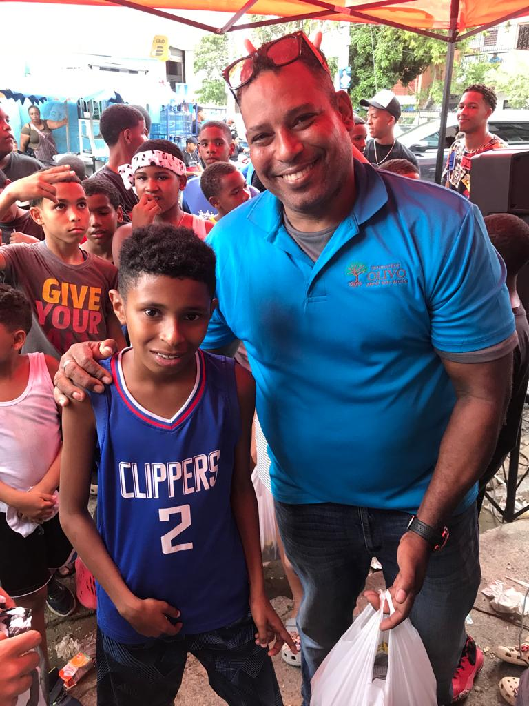

RNC:430-10706-9
Calle respaldo 32 esquina 41 num.18 cristo Rey D.N.Dom
José Ramón Olivo nació en el año 1970 en el populoso sector capitalino de Cristo Rey, en Santo Domingo, República Dominicana. Desde su niñez, mostró una profunda preocupación por las personas más necesitadas de su comunidad. A lo largo de su vida, José Ramón desarrolló un fuerte sentido de solidaridad y un compromiso con las causas sociales, lo que lo llevó a dedicarse al servicio de los demás. Con el paso de los años, fundó la Fundación Olivo, una organización sin fines de lucro cuyo objetivo principal es ofrecer apoyo a personas en situaciones de vulnerabilidad. Su visión ha sido siempre mejorar las condiciones de vida de los más desfavorecidos, brindando ayuda en áreas como la alimentación, la salud y la educación.
La Fundación Olivo nació con el propósito de ofrecer ayuda a las personas en situación de vulnerabilidad. Nos dedicamos a proporcionar recursos esenciales como comida, ropa, atención médica y educación a quienes más lo necesitan.
En Fundación Olivo trabajamos incansablemente para llevar esperanza a quienes se encuentran en situaciones de pobreza extrema. Creemos que cada persona tiene derecho a una vida digna, y es por eso que nos esforzamos por brindar apoyo y acompañamiento a las comunidades más necesitadas.
La Fundación Olivo tiene como misión principal ofrecer apoyo integral a las personas en situación de vulnerabilidad. Con el lema "Ayudar a los necesitados es nuestro lema", la fundación trabaja para mejorar la calidad de vida de aquellos que más lo requieren, brindando recursos esenciales como comida, ropa, atención médica y acceso a educación. Su objetivo es promover la dignidad humana, la solidaridad y el bienestar, creando un impacto positivo en las comunidades más desfavorecidas. A través de su trabajo incansable, la Fundación Olivo busca ser un faro de esperanza para quienes enfrentan las adversidades de la vida.Para obtener más información sobre nuestras actividades o si deseas colaborar con nosotros, no dudes en contactarnos: